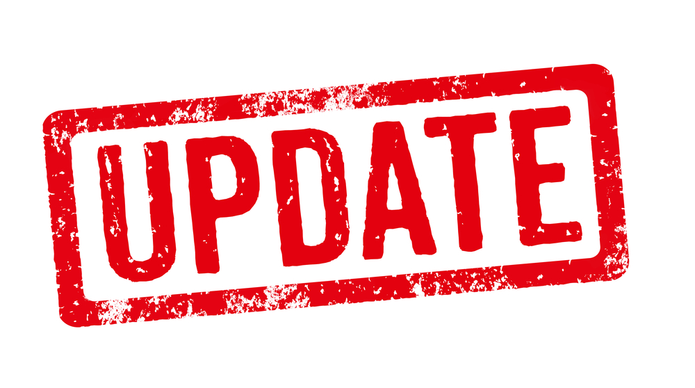

En av rutinene som følger med PC-er og ulike programmer er regelsmessige oppdateringer. Uten oppdatering av ulike programmer kan
det oppstå at utstyret tar lengre tid og ulike systemfeil.
En av de vanligste oppdateringene er å oppdatere operativsystemet, som for eksempel windows. Dette er noe man kan lett gjøre eller
få maskinen til å oppdatere seg selv. Når du oppdatere et opertivsystem vil det si at utgiveren har gitt ut en ny versjon.
Denne versjonen blir da mulig å laste ned og brukt.
En annen operativoppdatering som er lurt å følge med på, er visst det kommer en ny og forbedret versjon. Da kan det være lurt å bytte ut din
nåværende versjon men en ny og mer moderne versjon av operativsystemet.
Tilbake til datasikkerhet
Tilbake til startsiden
